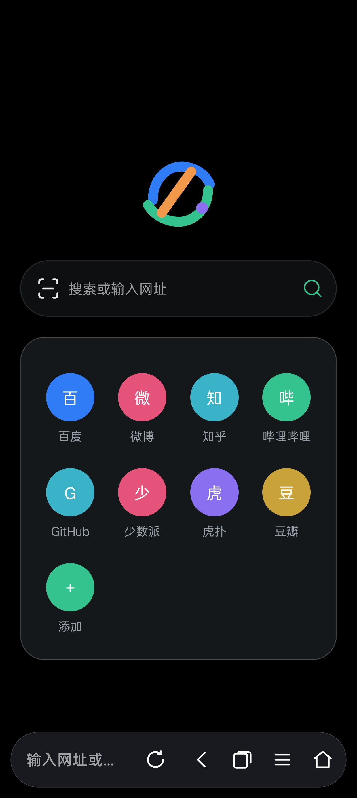
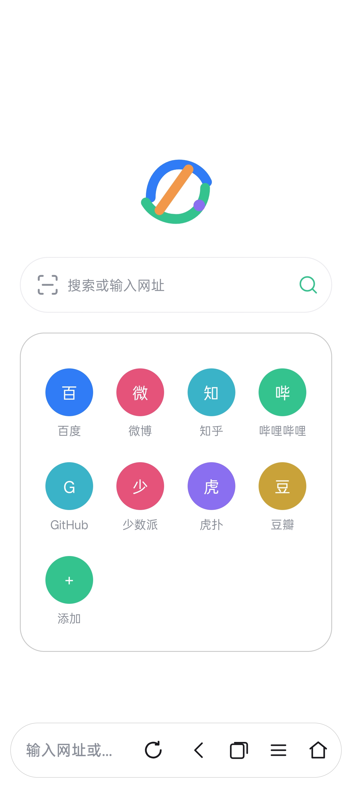
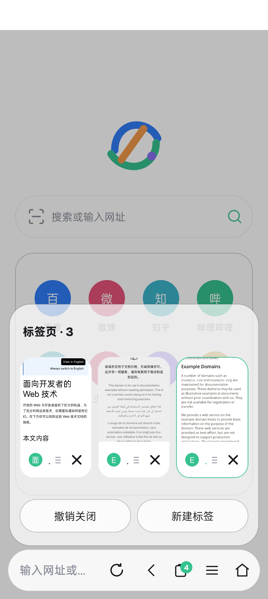
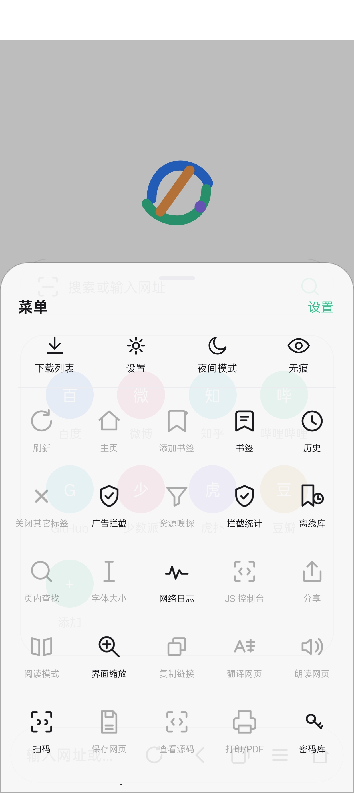
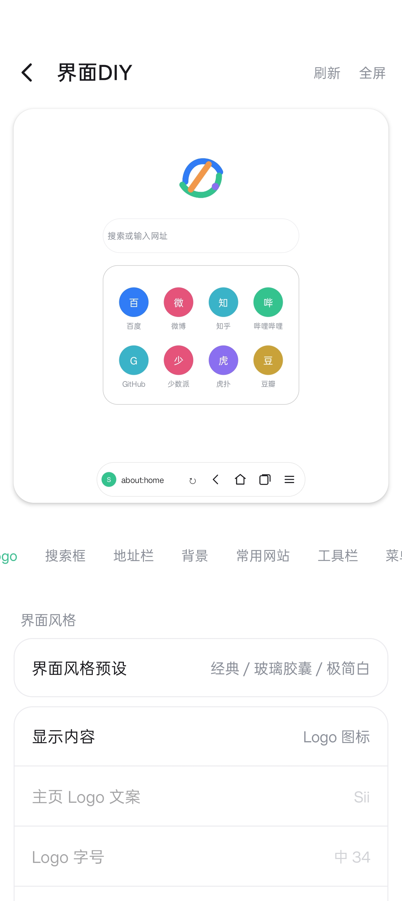
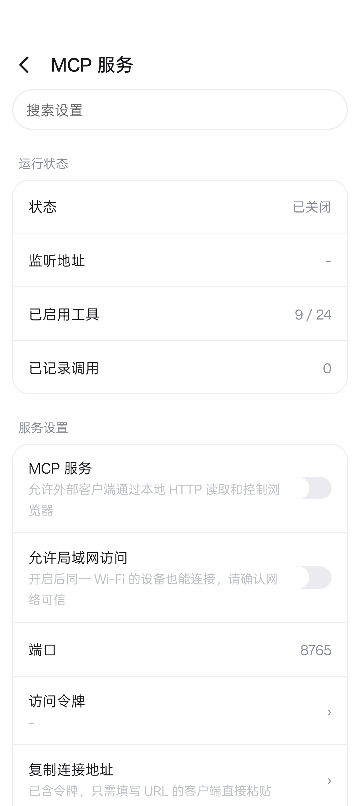

Sii 用 Kotlin 与原生 XML 从零实现，不依赖 Compose。多标签、广告拦截与隐私保护、网页翻译、下载管理， 还有用户脚本、MCP 与开发者工具。不含统计与崩溃上报 SDK。

浏览器该有的都有，再补上一些顺手的能力。
标签卡缩略图、关闭与恢复、最近关闭列表，支持无痕会话。
规则订阅与自定义规则，选取广告元素生成隐藏规则；隐私等级、兼容模式与站点放行。
整页翻译与恢复原文，支持在线接口与离线翻译包，译文状态在页面间保持。
内建多连接下载、HLS 支持、并发与重命名，下载进度直接铺在底栏。
按站点开启媒体嗅探，内建播放器支持横竖屏、倍速与音轨选择。
兼容常用 GM 接口与 @resource，页面内点击 .user.js 直接安装，按站点开关。
本地 MCP 服务供外部工具调用；应用内半屏开发者工具可查看控制台、元素与网络。
悬浮与经典两套工具栏，透明度、玻璃强度、主题色与菜单顺序都能调，预览实时生效。
主页、标签、菜单与 DIY 预览。




